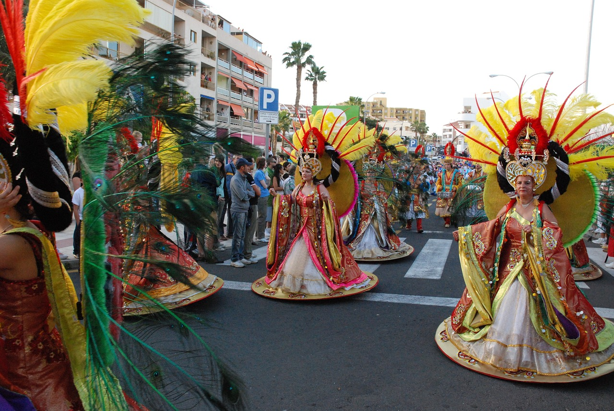
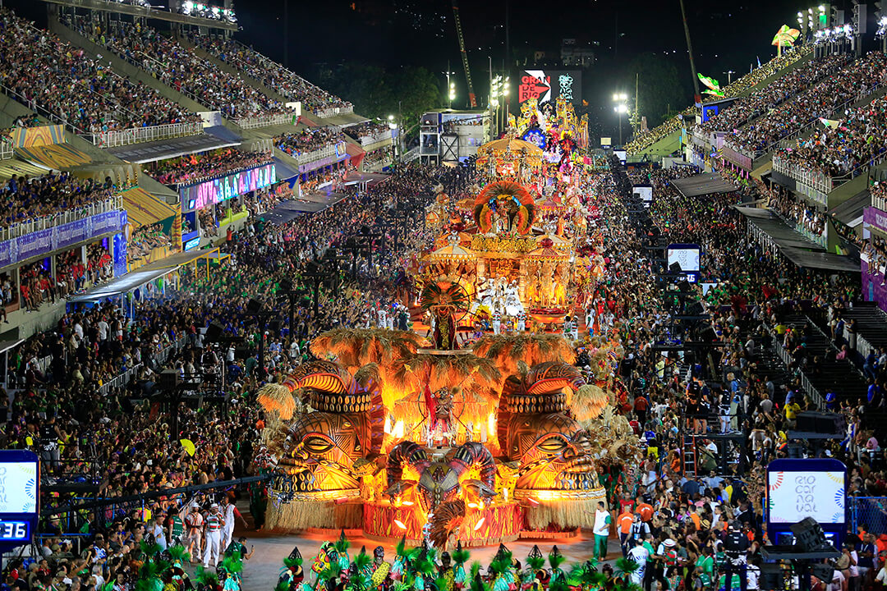
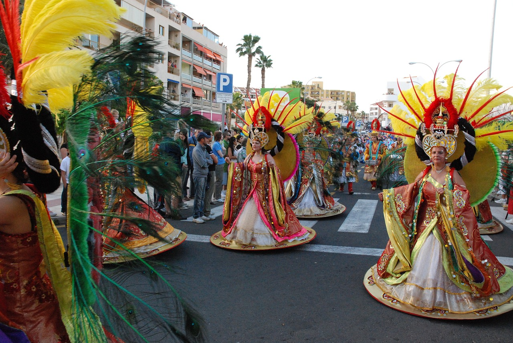
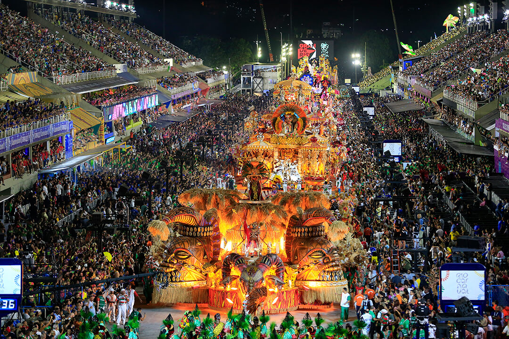
 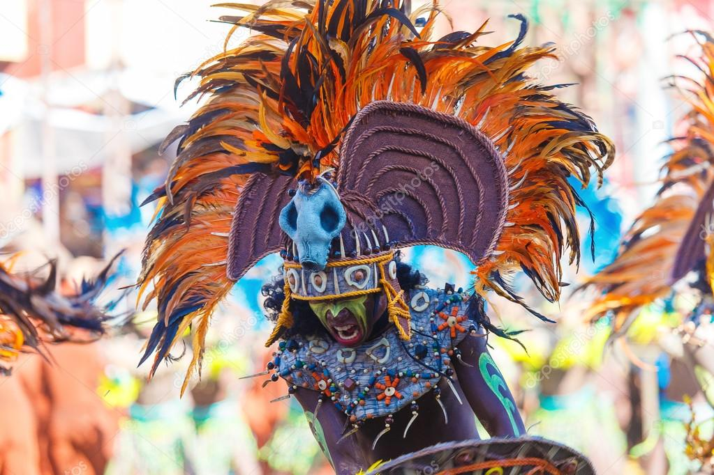
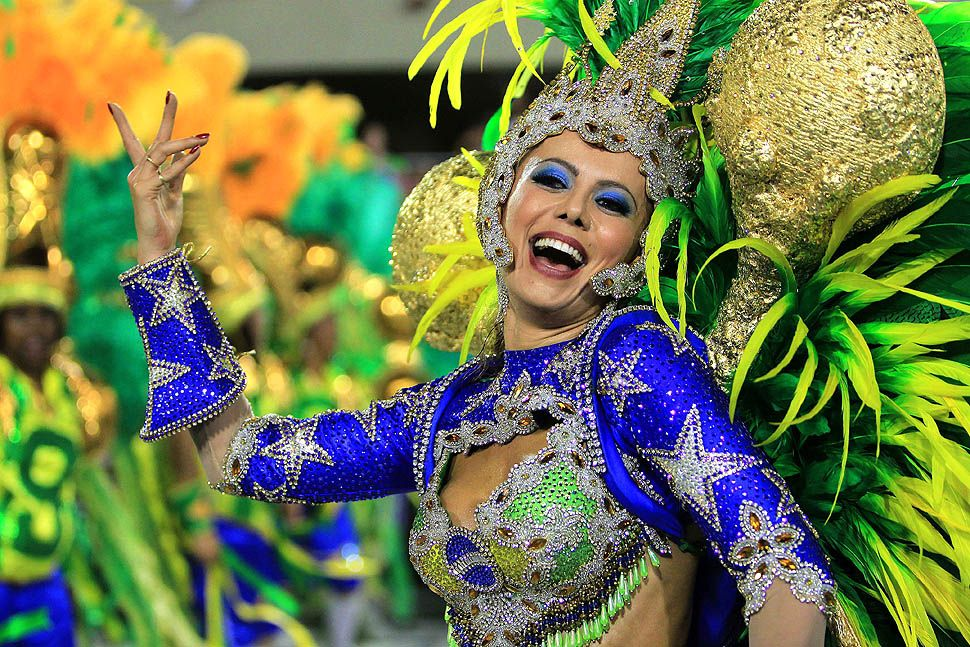
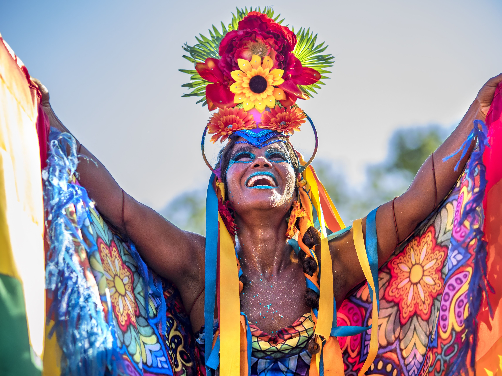
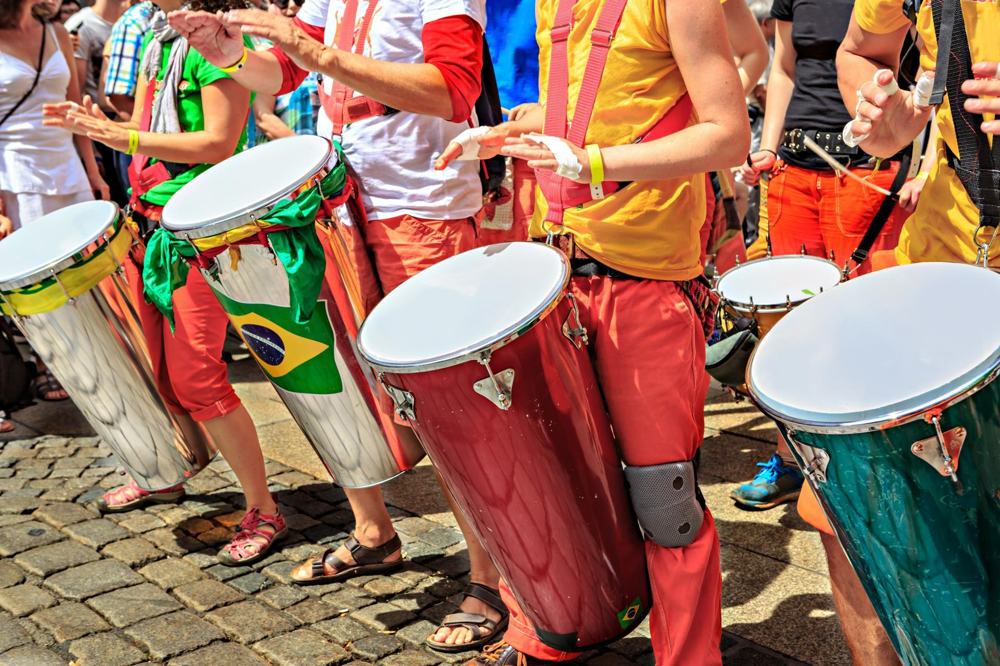
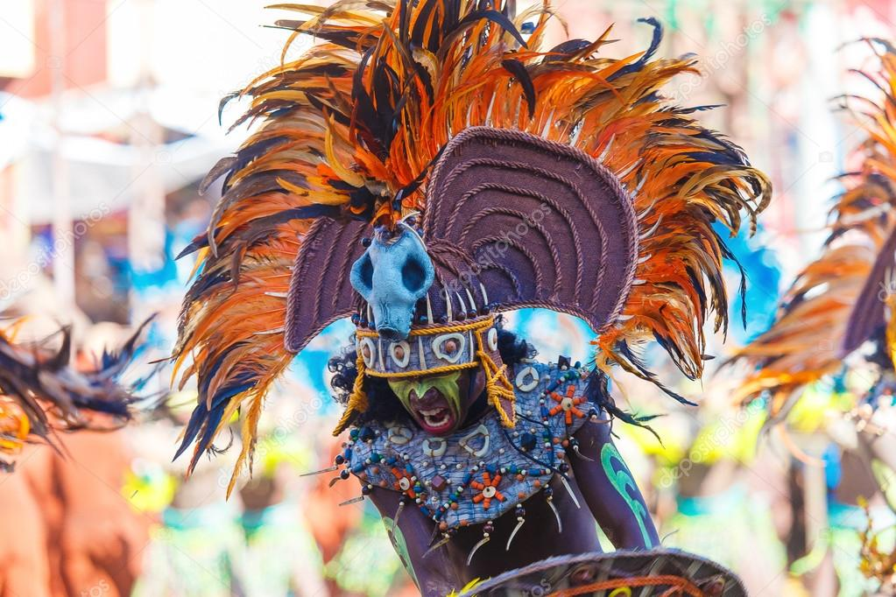
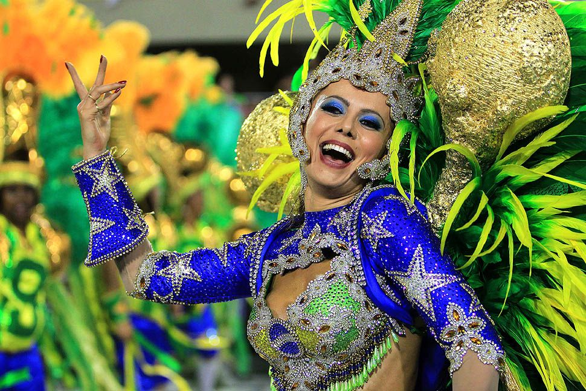
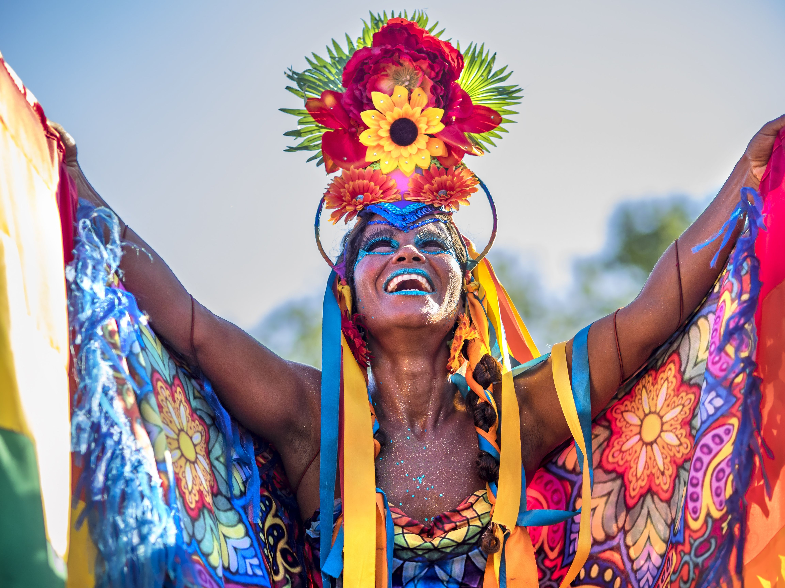
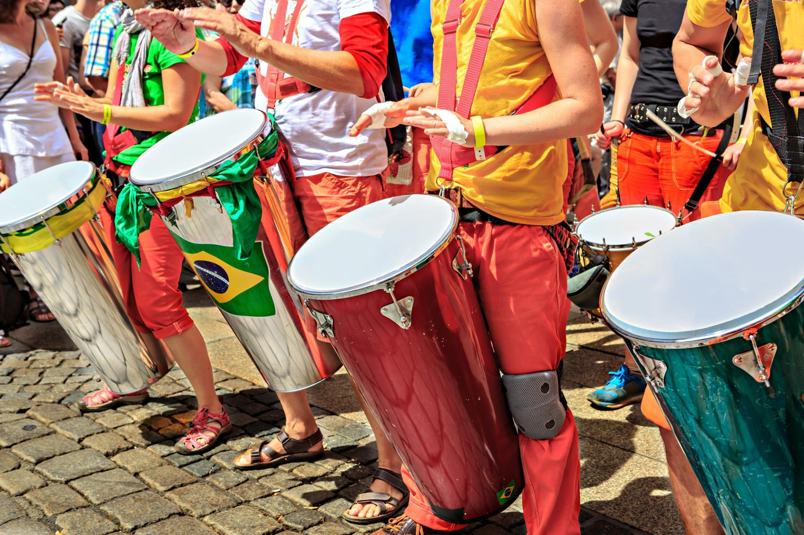
Bloco da Latinha
En la ciudad de Madre de Deus, en el estado de Bahía, Brasil, el "Bloco da Latinha" es una fiesta callejera única que se celebra durante el Carnaval. Este evento destaca por sus trajes elaborados con cientos de latas de aluminio recicladas, recolectadas y limpiadas durante meses. Cada traje, conocido como “pierro,” se confecciona con alrededor de 1,600 latas, uniendo creatividad y conciencia ambiental. El grupo comenzó en 1997 como una iniciativa para limpiar las calles de las latas dejadas por el Carnaval. Con el tiempo, enfrentaron desafíos para conseguir material debido al aumento de la recolección profesional de reciclables. A pesar de ello, el grupo resurgió en 2011 y ganó notoriedad al ser presentado en un programa de la cadena Globo en 2015, lo que impulsó su reconocimiento nacional. El evento, que mezcla arte, reciclaje y comunidad, enfrenta dificultades económicas y de patrocinio, ya que cada traje cuesta aproximadamente 220 reales (44 USD). Sin embargo, los miembros del grupo, como pescadores que recolectan latas del mar, ven en su labor un mensaje de esperanza y sostenibilidad para las generaciones actuales y futuras.